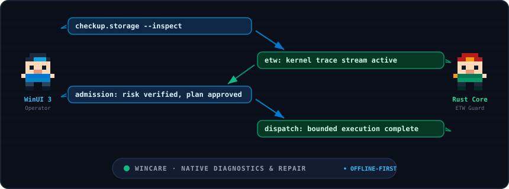

Check system health
Inspect system, storage, security, hardware, network, update and runtime evidence — collected coverage, never dressed up as a synthetic health score.
WinCare brings Windows checkups, maintenance, diagnostics and recovery into one native workspace. Read-only evidence stays separate from mutations, every system-changing action is admitted by its declared risk, and what ran is recorded locally.
269 unique command IDs in src/WinCare.CommandCatalog/Data/commands.json;
12 routes in PageService; contrast per token checked by
tools/verify_pill_contrast.py and tools/verify_palette_contrast.py.
WinCare separates user interface workflows from kernel probes. The WinUI 3 interface drives navigation,
while wincare-core and the native dispatcher handle Event Tracing for Windows (ETW), low-level queries, and bounded child process execution.

C:\.GetDiskFreeSpaceExW. NTFS dirty bit: clear. Standby cache: 1.42 GB.SystemMemoryListInformation purge admitted under Moderate risk.Home surfaces the next useful action; Checkup is read-only and hands findings to the right care surface; Power tools exposes the full typed catalog. Care pages project commands through the catalog's exact Area and Section taxonomy, so tools never leak into unrelated tabs.
Inspect system, storage, security, hardware, network, update and runtime evidence — collected coverage, never dressed up as a synthetic health score.
Review bounded cleanup targets, startup state, app and package state, and maintenance workflows — with a preview of exactly what a cleanup touches before it does.
Guarded repair, remediation, restore and recovery operations with explicit outcomes, plus portable playbooks as their own workflow.
All 269 commands with task search, exact Area and Section filters, real category browsing, Favorites, Recent, typed parameters and Care plans.
Add locally admitted capabilities through Extensions. Remote installation stays browse-only and fail-closed unless the configured catalog trust root verifies the package evidence.
Inspect activity, receipts, change records and local operation evidence. Undo appears only where a real, executable compensator exists.
Every tool maps to an exact Area and Section in the catalog. Filter by subsystem or select a card to inspect admission details:
Targeted disk cleanup, temporary directory analysis, and browser cache management without blind registry sweeping.
Inspect startup applications, scheduled tasks, and background services with recorded rollback state.
Verify antivirus definition freshness, real-time protection state, and active firewall network profiles.
Flush resolver caches, verify TLS cipher suites, and inspect active TCP listening sockets.
Execute DISM health checks, component store cleanup, and System File Checker (SFC) integrity scans.
Diagnose stalled downloads, repair the SoftwareDistribution catalog, and restart update services.
Inspect physical page distribution and reclaim cached standby memory when system pressure rises.
Read NVMe health, drive temperatures, battery wear, and CPU thermal throttling state.
WinCare never converts a failure into a generic success message. Risk decides how a command is allowed to run, and the dispatcher remains authoritative over execution.
Direct execution for read-only or bounded low-risk commands. Evidence is collected without mutating host state.
A reviewed, confirmed mutation flow. Parameters and privilege requirements are validated before anything runs.
A preview of the exact plan plus explicit approval, then a receipt describing the actual outcome.
System, storage, security, hardware, network and update evidence is collected without changing Windows. Checkup hands findings to the relevant care surface instead of fixing them in place.
Risk tier, parameter validation and privilege requirements are checked. Higher-impact operations disclose the affected roots and require explicit approval of the exact plan.
Admitted commands run through one fail-closed native executor with bounded processes, timeouts and captured output. Cancellation uses a pending state until execution settles.
Results and failures are recorded as operation evidence — actual outcomes, time and state — kept locally so you can see what ran and why.
Undo is exposed only where the implementation has a genuine compensator and enough captured state. No generic undo claims.
Plugins run with the process's permissions and can be inspected locally, but remote installation stays browse-only until the catalog trust root verifies the required evidence.
Inspects volume geometry, mount points, and free space without modifying disk sectors or file tables.
Release candidates provide packaged and portable builds for x64 and ARM64. Review high-impact changes before applying them — a release candidate is not a finished release.